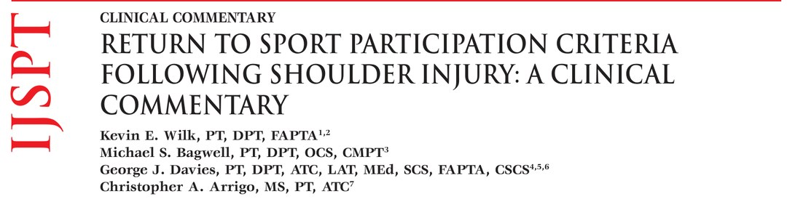
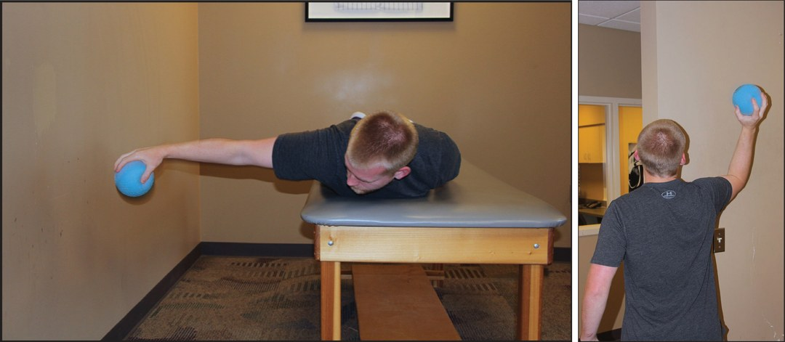
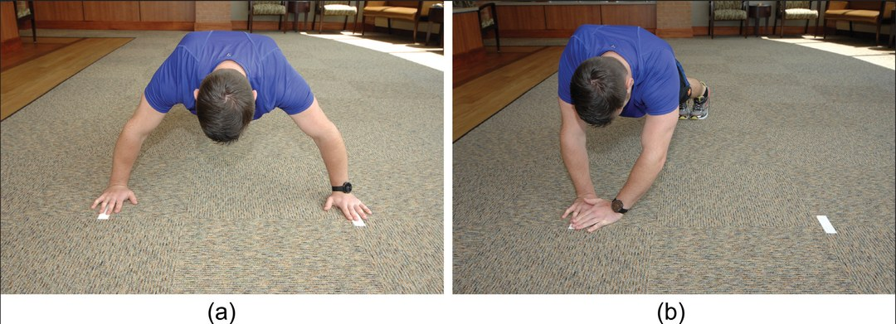
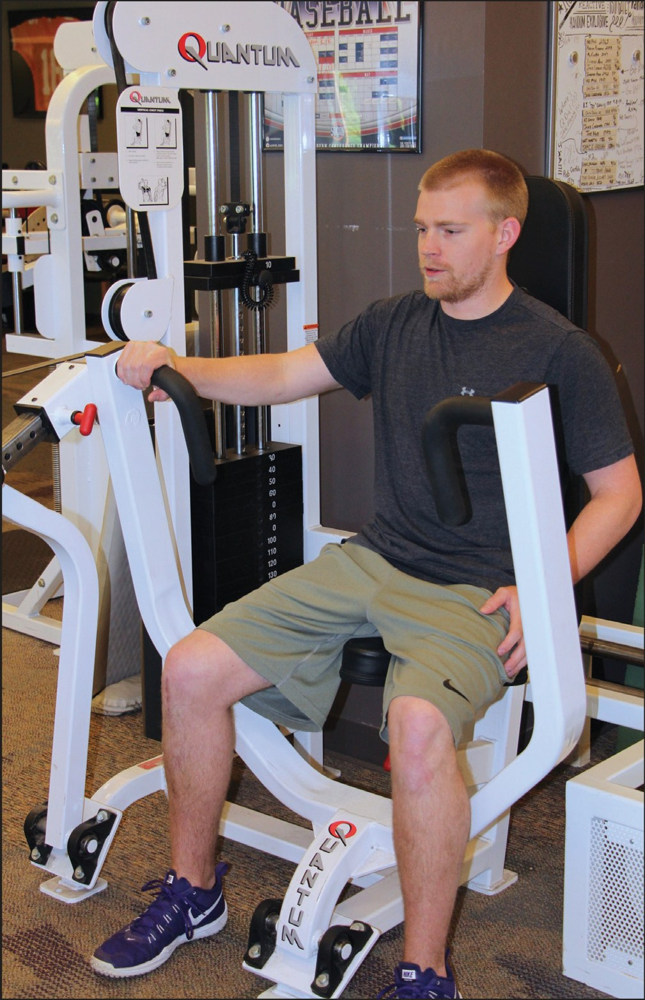

🔖原文首页（IJSPT 2020 年第 15 卷第 4 期）
📚 文献卡片
▪ 英文原题：Return to Sport Participation Criteria Following Shoulder Injury: A Clinical Commentary（肩关节损伤后重返运动的标准：临床评论）
▪ 作者：Kevin E. Wilk, Michael S. Bagwell, George J. Davies, Christopher A. Arrigo
▪ 机构：Champion Sports Medicine · 美国运动医学研究所（ASMI）· 佐治亚南方大学 · Advanced Rehabilitation
▪ 期刊：International Journal of Sports Physical Therapy（IJSPT）
▪ 年卷期：2020;15(4):624-642
▪ PMCID：PMC7735686
▪ 文章类型：临床评论（Clinical Commentary）
▪ 证据级别：5 级
▪ 关键词：Glenohumeral joint · return to play · overhead athlete · functional tests · rehabilitation · movement system
棒球投球时，肩关节的角速度超过 7200°/秒，是人体最快的动作，肩部承受的应力可达 1 倍体重。NFL 新秀试训中 9.7% 的运动员有肩关节不稳，肩关节稳定手术位列最常见的四大手术之一。
"The simple answer is the athlete can resume athletic activity again when they are ready and not before."
"最简单的回答是：运动员准备好了才能恢复运动，在此之前不行。"
"The use of time as the sole determination of when an athlete may resume practice or play following a shoulder injury or surgery is a critical error."
"把时间作为肩关节损伤或术后何时恢复训练、比赛的唯一依据，是一个严重的错误。"
几项研究的重返运动结果差别很大：
| 研究 | 人群 | 结果 |
|---|---|---|
| Alentorn-Geli 等 | 关节镜关节囊盂唇修复 | 86% 重返运动，73% 回到原水平（标准：无痛活动度＋力量 >健侧 80%） |
| 关节镜折叠术 | 多向不稳 | 90% 回到原水平 |
| Aboalata 等 | Bankart 修复 143 例，随访 13.3 年 | 满意度 92.3%，但只有 49.5% 回到原水平；康复 <6 个月者再损伤率 23.1%，>6 个月者 9.6% |
| Tjong 等 | Bankart 修复 25 例 | 功能评分和稳定性都不错，但只有 44% 重返运动，主要障碍是害怕再受伤 |
可见“手术成功”不等于“能回到赛场”。肩关节重返运动的研究远少于膝关节（膝关节已有 500 多篇），这篇评论的目的就是给出一套以标准为基础、可测量的重返运动流程。
表 1 3P 程序
| 阶段 | 内容 |
|---|---|
| P1：表现训练 Performance | 通过专项训练恢复功能：增强式训练、灵敏训练、末端本体感觉训练、扰动训练，在诊所内无症状完成 |
| P2：训练参与 Practice | 逐步增加训练时间、强度和次数：50%～60% → 75% → 80%～90% → 100%，再进入模拟比赛 |
| P3：比赛 Play | 顺利完成训练进阶后，评估能否以 100% 强度回到正式比赛 |
重返参与的 9 条标准（表 1 续）：
• 距受伤或手术已有足够的愈合时间
• 完成正规康复计划
• 运动专项所需的全范围无痛活动度
• 特殊检查稳定性极好且无痛
• 力量达到特定的参与标准
• 功能测试得分满意
• 运动专项测试
• 患者自评分数可接受
• 没有运动恐惧（用 Tampa 运动恐惧量表评估）
一句话概括：按标准而不是按时间，一步一步从康复走回赛场。
作者给出了两套递进的标准（主要针对肩关节不稳／宏观创伤患者），后者明显更严格：
表 2 & 表 3 开始训练 vs 重返比赛的标准
| 项目 | 表 2：开始参与训练 | 表 3：放行重返比赛 |
|---|---|---|
| WOSI 评分 | ≥90 | ≥95 |
| 被动活动度 | 全范围、无痛 | 全范围、无痛 |
| 临床检查 | 无阳性体征、无恐惧感 | 无阳性体征、无恐惧感 |
| 坠球测试 | 患侧达健侧的 90% | 患侧达健侧的 100% |
| 俯卧撑测试 | 第二轮次数多于第一轮 | 第二轮次数多于第一轮 |
| CKCUEST | ≥21 次 | ≥25 次 |
| 卧推 | ≥伤前 1RM 的 75%，无代偿 | ≥伤前 1RM 的 95%，无代偿 |
| 单侧拉 | 肢体对称指数 >95% | 肢体对称指数 >100% |
| 单侧推 | 肢体对称指数 >95% | 肢体对称指数 >100% |
| 等速测试 | 达标（双侧对比、单侧比值、体重标化、专项和位置常模） | 外旋峰力矩/体重 18%～23%；内旋 26%～32%；外旋/内旋 72%～76%（180°/s）；双侧对比外旋 95%～100%、内旋 100%～110%；测试中无痛、无恐惧 |
• ASES 肩关节评分：评估运动员对肩功能的自我评价和信心
• WOSI（西安大略肩关节不稳指数）：Kirkley 编制，21 题，评估身体和心理状态（附录 A）
• KJOC（Kerlan-Jobe 肩肘评分）：Alberta 编制，专为过头运动员设计（附录 B）
• DOSIS 量表：Blonna 编制，根据运动类型、频率、水平评估肩部在运动中的参与程度；85 例前方不稳术后患者，重测信度 ICC=0.96
• 总旋转活动度（TROM）与非投掷侧相差 ±5° 以内（共 10° 的窗口）
• 投掷侧水平内收 ≥40°
• 盂肱关节内旋缺失（GIRD）<15°
• 肘、腕活动度正常
| 参数 | 常模 |
|---|---|
| 外旋/内旋比值 | 72%～76% |
| 外旋力矩/体重 | 18%～23% |
| 内旋力矩/体重 | 26%～32% |
| 双侧对比：外旋 | 95%～100% |
| 双侧对比：内旋 | 100%～115% |

🔖图1（左）：坠球测试，俯卧，肩外展 90°、伸肘，手持 2 磅增强式训练球，30 秒内反复松手、接球；图2（右）：90°/90° 掷墙测试，站在门口，肩外展 90° 将 2 磅球掷向墙面 30 秒，分别计算优势侧与非优势侧次数
• 坠球测试：评估肩的耐力、快速动作意愿和动态稳定性；优势侧接球次数达到非优势侧的 >110% 为满意
• 90°/90° 掷墙测试：评估耐力、力量、力学和本体感觉；优势侧应达到非优势侧的 ≥112%，职业运动员差值更大
• 功能性投掷表现指数（FTPI）：距离 15 英尺、向离地 4 英尺、1 平方英尺的目标投球 30 秒，计算准确率；常模男性 47%、女性 29%，ICC=0.91
• 单腿下台阶测试：30 秒内完成 10 次为满意，观察对侧骨盆下沉和同侧躯干侧倾；下肢无力会改变投球力学
• Underkoffler 垒球远投：一步垫步后全力投远，是 FTPI 的最大强度进阶，ICC=0.95
每一步都要无痛、无并发症完成才能进入下一步，不设固定天数。第 1～10 步用垫步（crow-hop）、约 60% 力量；野手完成第 10 步后可开始模拟比赛投球；投手第 11～12 步用 70%～75% 强度，然后上投手丘。
表 5 间歇投掷程序（1 英尺≈0.3 米）
| 阶段 | 步骤与内容 |
|---|---|
| 45 英尺 | 第 1 步：热身 → 45 英尺 25 次 → 休息 3～5 分钟 → 热身 → 45 英尺 25 次 第 2 步：同上，再加一轮（休息 → 热身 → 45 英尺 25 次），共 3 组 |
| 60 英尺 | 第 3 步：热身 → 60 英尺 25 次 → 休息 → 热身 → 60 英尺 25 次 第 4 步：同上，共 3 组 60 英尺 25 次 |
| 60 & 75 英尺 | 第 5 步：热身 → 60 英尺 25 次 → 休息 → 60 英尺 25 次 → 热身 → 75 英尺 25 次 第 6 步：热身 → 60 英尺 25 次 → 休息 → 热身 → 75 英尺 25 次 → 休息 → 热身 → 75 英尺 25 次 |
| 75 & 90 英尺 | 第 7 步：60 英尺 10 次 → 75 英尺 5～7 次 → 90 英尺 15～20 次 → 休息 → 60 英尺 10 次 → 75 英尺 5～7 次 → 90 英尺 20 次 第 8 步：60 英尺 10 次 → 75 英尺 5～7 次 → 90 英尺 18 次 → 休息 → 60 英尺 7 次 → 75 英尺 7～10 次 → 90 英尺 18 次 → 休息 → 60 英尺 7 次 → 90 英尺 18 次 |
| 90 & 120 英尺 | 第 9 步：60 英尺 10 次（需要时 75 英尺）→ 90 英尺 5～7 次 → 120 英尺 15 次 → 休息 → 60 英尺 5～7 次（需要时 75 英尺）→ 90 英尺 5～7 次 → 120 英尺 15 次 第 10 步：60 英尺 5 次（需要时 75 英尺）→ 90 英尺 10 次 → 120 英尺 15 次 → 休息 → 60 英尺 5～7 次 → 90 英尺 10 次 → 120 英尺 15 次 → 休息 → 60 英尺 5 次 → 90 英尺 10 次 → 120 英尺 15 次 |
| 平地投球 | 第 11 步：60 英尺 10～15 次 → 75 英尺 5～10 次 → 90 英尺 10 次 → 120 英尺 10 次 → 用投球动作 60 英尺 20～30 次 第 12 步：60 英尺 10～15 次 → 75 英尺 10 次 → 90 英尺 10 次 → 120 英尺 10 次 → 投球动作 60 英尺 20～30 次 → 休息 → 60～90 英尺 10～15 次 → 投球动作 60 英尺 20 次以上 |
| 投手丘 第一阶段 （只投直球） | 以第 9 步作为热身 第 1 步：投手丘 15 球（50%） 第 2 步：30 球（50%） 第 3 步：45 球（50%） 第 4 步：45 球（50%） 第 5 步：70 球（50%） 第 6 步：45 球（50%）＋ 30 球（75%） 第 7 步：30 球（50%）＋ 45 球（75%） 第 8 步：65 球（75%）＋ 10 球（50%） |
| 投手丘 第二阶段 （只投直球） | 第 9 步：60 球（75%）＋ 打击练习投球 15 球 第 10 步：50～60 球（75%）＋ 打击练习投球 30 球 |
接触性运动或肩关节不稳术后的患者，需要另一套测试：
| 测试 | 方法 | 标准／信度 |
|---|---|---|
| 俯卧撑测试 | 男标准、女改良俯卧撑；3 轮 15 秒全力，每轮休息 45 秒，取平均 | ICC=0.96 |
| CKCUEST | 俯卧撑姿势，双手相距 36 英寸（约 91 cm），交替伸手触碰对侧胶带；15 秒 × 3 轮，每轮休息 45 秒，取平均 | ICC=0.922 |
| 1RM 卧推 | 评估上肢力量，观察对称、无代偿；有伤前数据时对比 | ICC=0.999 |
| 单侧最大胸推 | 坐姿器械，单侧 1RM | 患侧 ≥健侧 80%（作者经验，尚无研究验证） |
| 单侧拉 | 拉索机站姿后拉 20 次，观察塌腰、耸肩、头前伸 | 双侧比 ≥95% |
| 单侧推 | 拉索机单臂前推 20 次，观察代偿 | 双侧比 ≥95% |
| 单臂坐姿推铅球 | 6 磅球，背靠墙坐，从肩部推出，尽量不借助腿和躯干；3 次取平均 | ICC 0.97～0.99 |
| 上肢跳跃测试 | 单臂俯卧撑支撑，另一手放腰后，在 10.2 cm 台阶上下跳 5 次，计时 | ICC 0.78～0.81；非优势侧平均慢 4.4% |
| 上象限 Y 平衡测试 | 单臂支撑，另一手向内侧、外上、外下三个方向伸够，取 3 次平均 | ICC 0.80～0.99，评定者间 1.00 |
| 屈臂悬垂 | 下巴保持在杠上方的时间 | ≥15 秒及格，≥70 秒满分 |
| 改良引体向上／引体向上 | 仰卧拉向横杆，3 轮 15 秒；标准引体向上计次 | ICC 0.99／0.88 |
| 药球测试 | 坐姿双手胸前传球；后抛过头；侧向旋转抛 | 评估全身动力链爆发力 |

🔖图3：闭链上肢稳定性测试（CKCUEST）。a）俯卧撑姿势，双手放在相距 36 英寸的胶带上；b）双手交替越过身体触碰对侧胶带，15 秒内尽可能多次

🔖图4：单侧坐姿器械胸推测试（1RM）。坐在胸推器械上，一侧上肢推举，另一侧放松置于中立位，两侧分别测出 1RM
表 4 推荐的上肢测试
| 过头运动员（微创伤） | 宏观创伤后 |
|---|---|
| • KJOC 肩肘评分 • 活动度 • 等速测试 • 坠球测试 • 90°/90° 掷墙测试 • 功能性投掷表现指数 • 单腿下台阶测试 • Underkoffler 过肩垒球远投 | • WOSI • 活动度 • 等速测试 • 俯卧撑测试 • 引体向上／改良引体向上 • 屈臂悬垂 • 药球测试 • CKCUEST • 1RM 卧推 • 单侧最大胸推 • 单侧拉 • 单臂推 • 上象限 Y 平衡 • 单臂坐姿推铅球 • 上肢跳跃测试 |
表 6 是过头运动员恢复投球的具体门槛：a 是开始长传（第一阶段），b 是上投手丘（第二阶段）。
表 6 恢复投球的标准
| 项目 | a：第一阶段（长传） | b：第二阶段（投手丘） |
|---|---|---|
| 活动度 | TROM 与非投掷侧差 5° 以内；水平内收 ≥40°；GIRD <15°；肘腕被动活动度正常 | 同左（TROM ±5°） |
| 外旋/内旋比 | 72%～76% | 72%～76% |
| 外旋/外展比 | 68%～73% | 68%～73% |
| 投掷侧内旋 | ≥非投掷侧 115% | ≥非投掷侧 120% |
| 投掷侧外旋 | ≥非投掷侧 95% | ≥非投掷侧 100% |
| 肘屈伸 | 非投掷侧的 100%～115% | 非投掷侧的 110%～115% |
| 腕屈伸、前臂 | 非投掷侧的 100%～115% | 非投掷侧的 110%～115% |
| 临床检查 | 无阳性体征、无恐惧；医生放行 | 无阳性体征、无恐惧；医生放行 |
| 康复完成度 | 完成所有康复步骤 | 完成全部长传程序；完成 70%～75% 强度的平地投球 |
| 功能测试 | 俯卧坠球（投掷侧 ≥110%）；90/90 单臂掷墙（2 磅球，30 秒无痛 ≥115%）；单腿下台阶 30 秒（8 英寸台阶） | 20 英尺外用 1 磅球以 66% 强度向回弹网投 45 秒，无痛、无疲劳、动作良好；俯卧坠球（≥115%）；单臂掷墙（≥115%，无痛）；单腿下台阶 30 秒无代偿 |
| 自评 | KJOC 投手评分满意 | KJOC 投手评分满意 |
其中最关键的几项是：活动度、没有恐惧感、特殊检查（抽屉试验、支点试验）稳定、力量和耐力（坠球测试）、心理信心。WOSI 是普通骨科患者和冲撞性运动员肩稳定性的很好指标。
表 7 肩关节不稳表现进阶评估表
| 序号 | 评估项目 | 结果 |
|---|---|---|
| 1 | WOSI 肩关节评分：得分＿＿ | 通过 / 未通过 |
| 2 | 运动专项全范围活动度 | 通过 / 未通过 |
| 3 | 临床检查满意 | 通过 / 未通过 |
| 4 | 坠球测试：得分＿＿ | 通过 / 未通过 |
| 5 | 俯卧撑测试：得分＿＿ | 通过 / 未通过 |
| 6 | CKCUEST：得分＿＿ | 通过 / 未通过 |
| 7 | 卧推评估：得分＿＿ | 通过 / 未通过 |
| 8 | 单侧拉评估：得分＿＿ | 通过 / 未通过 |
| 9 | 单侧推评估：得分＿＿ | 通过 / 未通过 |
| 10 | 等速测试（或手持测力计） | 通过 / 未通过 |
| 11 | 医生批准重返运动 | — |
以下问题针对过去一周因肩部问题出现的症状，每题在 0～100 的线段上标记（数值越高，问题越严重）。
| 序号 | 问题 |
|---|---|
| 1 | 做过头动作时肩部有多痛？ |
| 2 | 肩部酸痛或跳痛的程度？ |
| 3 | 肩部无力或缺乏力量的程度？ |
| 4 | 肩部疲劳或缺乏耐力的程度？ |
| 5 | 肩部弹响、咔哒声或断裂感的程度？ |
| 6 | 肩部僵硬的程度？ |
| 7 | 因肩部问题导致颈部肌肉不适的程度？ |
| 8 | 肩部不稳或松动感的程度？ |
| 9 | 需要用其他肌肉代偿肩部的程度？ |
| 10 | 肩部活动度丧失的程度？ |
| 11 | 肩部对参加体育或娱乐活动的限制程度？ |
| 12 | 肩部对完成运动或工作专项技能的影响程度？（两者都受影响时，选影响最大的） |
| 13 | 活动中觉得需要保护手臂的程度？ |
| 14 | 在肩部以下提重物的困难程度？ |
| 15 | 害怕摔倒压到肩部的程度？ |
| 16 | 维持理想体能水平的困难程度？ |
| 17 | 和朋友打闹嬉戏的困难程度？ |
| 18 | 因肩部问题导致睡眠困难的程度？ |
| 19 | 时刻在意自己肩膀的程度？ |
| 20 | 担心肩部变得更糟的程度？ |
| 21 | 因肩部问题感到沮丧的程度？ |
第一部分：背景信息（仅针对手臂的伤病史）
• 基本信息：姓名、年龄、性别、优势手（右/左/双手）、检查日期、运动项目、位置、运动年限
• 1. 目前手臂有伤吗？（是/否）
• 2. 目前仍在参加运动吗？（是/否）
• 3. 过去一年是否因肩或肘受伤错过比赛或训练？（是/否）
• 4. 是否被诊断过扭伤或拉伤以外的肩肘损伤？如是，诊断是什么？
• 5. 是否因肩肘损伤接受过治疗？如是，勾选：休息 / 治疗 / 手术（请说明）
• 6. 你参加过的最高竞技水平？（职业大联盟、职业小联盟、大学、高中）
• 7. 目前的竞技水平？
• 8. 如果目前水平低于最高水平，你认为是手臂伤病导致的吗？（是/否）
• 当前状态（单选）：无手臂问题正常比赛 / 带着手臂问题比赛 / 因手臂问题停赛
第二部分：10 个问题（在线段上标记当前水平）
| 题目 | 最差端 | 最好端 |
|---|---|---|
| 1. 比赛或训练前热身、活动开的难度？ | 比赛或训练中从来没能活动开 | 正常热身时间 |
| 2. 肩或肘疼痛程度？ | 静息时也痛 | 比赛时不痛 |
| 3. 肩或肘无力和/或疲劳的程度？ | 无力或疲劳到无法比赛 | 不无力，比赛后正常疲劳 |
| 4. 比赛中肩或肘的不稳感？ | 经常“脱出来” | 没有不稳 |
| 5. 手臂问题对你与教练、管理层、经纪人关系的影响？ | 离队、被交易或被裁，失去合同或奖学金 | 完全没有影响 |
| 6. 因手臂问题改变投球、发球、击球等动作的程度？ | 完全改变，已无法完成该动作 | 动作没有改变 |
| 7. 因手臂问题导致速度和/或力量下降的程度？ | 力量全失，转为技巧型或耐力型选手 | 速度/力量无变化 |
| 8. 因手臂问题导致比赛耐力受限的程度？ | 明显受限（如改当救援投手、改跑短距离） | 比赛耐力不受限 |
| 9. 因手臂问题导致控制力（投球、发球、击球等）下降的程度？ | 所有投球、发球、击球都无法控制 | 控制力没有下降 |
| 10. 手臂对你目前竞技水平的影响（是否阻碍你发挥全部潜力）？ | 无法比赛，不得不换项目 | 达到期望的竞技水平 |
• 证据级别低：5 级临床评论，很多界值（坠球 >110%、掷墙 ≥112%、单侧推拉 95%、胸推 80%）来自作者未发表的数据或临床经验，缺乏验证
• 同一测试的标准前后不一：坠球测试正文写优势侧 >110%，表 6 写 110%/115%，表 2/表 3 写 90%/100%（后者针对宏观创伤患者，与投手标准不同，但原文没有明确说明）；掷墙测试正文 ≥112%、表 6 写 115%；内旋双侧对比正文 100%～115%、表 3 写 100%～110%
• 表号错误：原文“临床实践中的测试”一节提到“表 9b”“表 9c”，但全文只有 7 个表，应为表 2 和表 3
• 笔误：表 6b 中“1 Ib plyoball”应为“1 lb”（1 磅）；附录 B 有“Naver”“copetition”“linesse”等拼写错误，不影响理解
• 优点：把重返运动拆成可测量、可记录的步骤，配合表 7 的评估表，便于临床直接使用
① 原则：时间不是唯一标准，要看愈合、活动度、力量、功能和心理
② 流程：P1 表现训练 → P2 训练参与（强度 50%→100%）→ P3 比赛
③ 分人群：过头运动员看活动度、等速、坠球、掷墙、投掷程序；宏观创伤看俯卧撑、CKCUEST、卧推、推拉
④ 两道门槛：开始训练 WOSI ≥90、CKCUEST ≥21；重返比赛 WOSI ≥95、CKCUEST ≥25
⑤ 投手：间歇投掷程序按步推进，不设固定天数
⑥ 心理：没有运动恐惧、对肩有信心，才算真正准备好
欢迎关注骨科康复小黄公众号，获取更多物理治疗的专业知识！
📄参考文献：
Wilk KE, Bagwell MS, Davies GJ, Arrigo CA. Return to Sport Participation Criteria Following Shoulder Injury: A Clinical Commentary. Int J Sports Phys Ther. 2020;15(4):624-642. PMCID: PMC7735686.
文中图片均来自原文，表 1～7 及附录 A、B 已译为中文，仅用于学术交流。